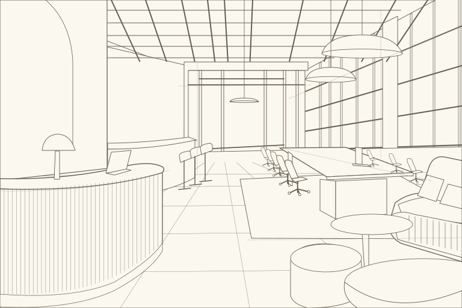

Design ambition means more when it is grounded in the building, the budget and the people who will use the space. BAMBU connects those conversations from the start.
Five connected stages, with design thinking and construction judgement informing each decision rather than arriving as separate handovers.
01 / DISCOVER
Understand
Start with the people, the business and the building. Review how the space works today, what must change and which constraints shape the brief. A site visit and early test fit can prevent an attractive but unworkable concept.
02 / EVALUATE
Plan
Compare the options before committing. Establish an indicative budget, milestones, landlord requirements and likely route through design, procurement and construction — while there is still room to choose.

03 / DEVELOP
Design
Develop layout, finishes, furniture, lighting and technology as one coordinated whole. Test the idea against services, access, fire safety, maintenance and the agreed cost target.
04 / REALISE
Deliver
Turn approved information into a workable construction sequence. Coordinate specialists, inspections, changes, commissioning and handover around the way the space will be occupied.
05 / CONTINUE
Support
A project is not finished when the last contractor leaves. Resolve outstanding items, provide documentation, explain key systems and agree the aftercare or future adaptation the client needs.
02 / EARLY CLARITY
Two decisions worth making early.
The best moment to challenge an assumption is before a drawing, cost or completion date depends on it.
TEST THE BRIEF
01 / COMMERCIAL LOGIC
Design to budget.
A budget is a design input, not just a figure added at the end. Separate essential works from optional enhancements, allow for building conditions and procurement lead times, and record assumptions so that value decisions remain transparent.
Read the lease and building requirements early. Approvals may involve drawings, specifications, method statements and technical reviews. Reflect the landlord's process and any separate statutory consents in the programme.
We set out dependencies, responsibilities and decisions clearly, so changes to scope, cost or programme can be considered before they become problems on site.

 01 / DISCOVER
01 / DISCOVER